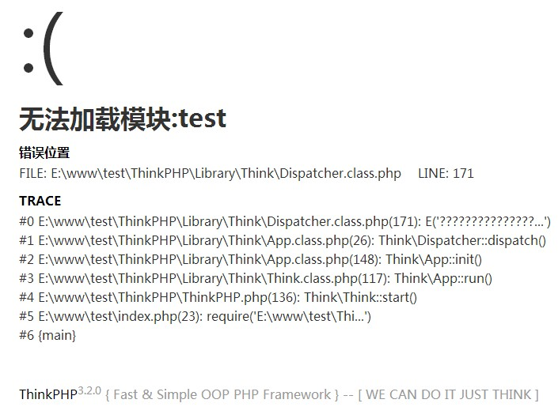

和PHP默认的异常处理不同，ThinkPHP抛出的不是单纯的错误信息，而是一个人性化的错误页面，如下图所示：

只有在调试模式下面才能显示具体的错误信息，如果在部署模式下面，你可能看到的是一个简单的提示文字，例如：
一旦关闭调试模式，发生错误后不会提示具体的错误信息，如果你仍然希望看到具体的错误信息，那么可以如下设置：
'SHOW_ERROR_MSG' => true, // 显示错误信息
如果你试图在部署模式下访问一个不存在的模块或者操作，会发送404错误。
调试模式下面一旦系统发生严重错误会自动抛出异常，也可以用ThinkPHP内置的E方法手动抛出异常。
E('新增失败');
也可以支持异常代码（默认为0），例如：
E('信息录入错误',25);
同样也可以使用throw 关键字来抛出异常，下面的写法是等效的：
throw new \Think\Exception('新增失败');
我们可以自定义异常页面的显示，系统内置的异常模板在系统目录的Tpl/think_exception.tpl，可以通过修改系统模板来修改异常页面的显示。也通过设置TMPL_EXCEPTION_FILE配置参数来修改系统默认的异常模板文件， 例如：
'TMPL_EXCEPTION_FILE' => APP_PATH.'/Public/exception.tpl'
异常模板中可以使用的异常变量有：
$e['file']异常文件名
$e['line'] 异常发生的文件行数
$e['message'] 异常信息
$e['trace'] 异常的详细Trace信息
因为异常模板使用的是原生PHP代码，所以还可以支持任何的PHP方法和系统变量使用。
抛出异常后通常会显示具体的错误信息，如果不想让用户看到具体的错误信息，可以设置关闭错误信息的显示并设置统一的错误提示信息，例如：
'SHOW_ERROR_MSG' => false,
'ERROR_MESSAGE' => '发生错误！'
设置之后，所有的异常页面只会显示“发生错误！”这样的提示信息，但是日志文件中仍然可以查看具体的错误信息。
系统的默认情况下，调试模式是开启错误信息显示的，部署模式则关闭错误信息显示。
另外一种方式是配置ERROR_PAGE参数，把所有异常和错误都指向一个统一页面，从而避免让用户看到异常信息，通常在部署模式下面使用。ERROR_PAGE参数必须是一个完整的URL地址，例如：
'ERROR_PAGE' =>'/Public/error.html'
如果不在当前域名，还可以指定域名：
'ERROR_PAGE' =>'http://www.myDomain.com/Public/error.html'
注意ERROR_PAGE所指向的页面不能再使用异常的模板变量了。